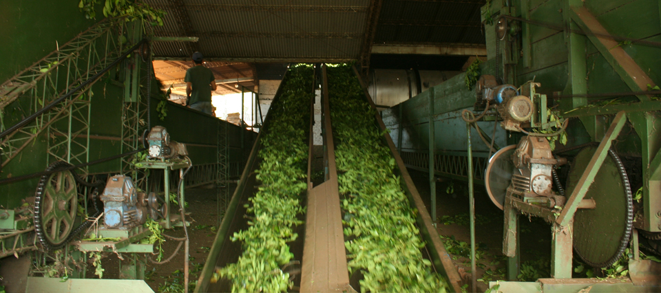

Producción de yerba mate
Para producir 1 kg de yerba mate, se necesitan 3 kg de hojas verdes, porque durante el secado, el producto pierde agua y peso. En todo el proceso de producción, desde la cosecha hasta el envasado, la Yerba Mate sólo recibe calor para el secado, tiempo de estacionamiento y molienda.
Germinación: Se desarrollan pequeñas plantas de yerba (plantines) con semillas maduras y se los conservan hasta los 7 centímetros.
Cosecha: A los cuatro años la planta alcanza un desarrollo apto para la poda o cosecha. Abril y septiembre son los meses ideales para cosechar porque las hojas están maduras y la planta está en un receso vegetativo (no hay brotación).
Sapecado y secado: En estos procesos se somete unos segundos (sapeco) la hoja verde a fuego directo y al calor para reducir al mínimo el porcentaje de humedad y lograr hojas crujientes. Las hojas son transportadas en cintas para continuar secándolas.
Canchado y estacionado: Se realiza una primera molienda gruesa o “canchado” de la hoja ya seca. Luego se coloca la yerba canchada en bolsas y se la estaciona durante 9 meses o más, en depósitos donde se controla la temperatura y humedad.